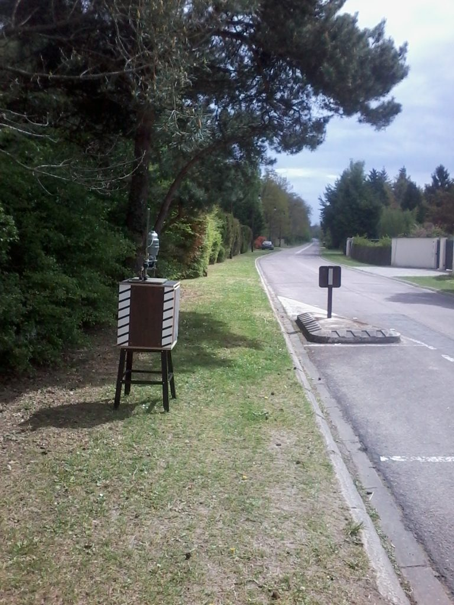

!The Mangrovia Rad-Art implement is running just fine
Somewhere in France, a common societal problem. Cars and trucks speed through a residential neighborhood. On average, way above speed limit, and way above what is reasonable given the fact that people live there, cross the street, walk their dog. The municipality intervenes with a chicane and speed bumps. Bumps are somewhat effective (but not with trucks, who merrily drive over them: see our post on speed bumps). The chicane is a perfect failure. It only works with heavy traffic. In light traffic – which is the norm in the village – drivers eyeball the car coming in the opposite direction and instead of giving way, well, they accelerate. (see also Speed bump madness in Paris)
We came up with a homegrown implement. An empty box was assembled from Ikea leftovers (see also The Grand Ikea Abandonment). It measures 60 (height) by 45 by 50 cm, and is mounted on a recycled metallic base, 55 cm tall. It is surmounted by a photo magnifier found dumped in a town street. One side is missing, so that the implement can be inspected and found to be just an empty box. Regular white diagonal stripes are painted on the extant brown (simile-wood) background, in bands approx 10 cm wide that run parallel to the vertical corners.
The implement has been christened Rad-Art.
Rad-Art has been placed during week-ends immediately after the village’s doors, in the precise point in which the otherwise straight road makes a minimal 10° left turn, and in correspondence of a street sign indicating both the turn and the presence of the first chicane of a series of four. The turn blinds drivers to the road ahead, that they can only visually access when they are 50 m from the turn. At that point, they typically accelerate, either existing or entering the village.
After three consecutive week-ends of placement of Rad-Art, here are some informal observations.
- An absolutely significant diminution of the average speed. Drivers even brake when they approach Rad-Art (meaning they are already driving too fast). Diminution in average speed means more safety, less noise, and less pollution.
- One case of vandalism (on Apr 22, 2017). The Rad-Art main box was found displaced from its support and put on the ground.
- One friendly police intervention. During a routine round on Apr 23, 2017, the Major from the local brigade stopped and discussed with us about the details and the meaning of the operation. He found it interesting and did not discourage it. He said that as long the object was not meant to be a copy of a speed radar, it was not objectionable. As anybody can judge from a comparison of pictures of Rad-Art and standard speed radars used on French roads, Rad-Art makes no attempt to be a copy of the latter. It is a caricature of a mad scientist’s creation, whose absurdity is all the more apparent given the presence of the vintage magnifier. It is safely placed in a protected point, and can be easily and safely inspected by anyone who wants to stop (the chicane protects two usually empty parking spots.) The Major gave us his card and offered to listen to the neighborhood’s complaints about speed. We are presently writing a petition.
- A number of conversations with neighbors who share the same concern about road safety.
- Conversations with drivers and, in one case, with a cyclist, who stop and ask about Rad-Art. These are in general sympathetic, as they are generally neighbours.
- According to one neighbor, it may be the case that Rad-Art is tagged on some semi-legal apps that signal to drivers the presence of speed radars. This would make it work even when it is not physically displayed.
Rad-Art is an artistic performance; it is not an utilitarian object. In particular, it is not meant to reduce speed or to assist traffic control. It is loosely meant to make drivers think about their speed habits, and to prompt conversations, which is one feature of all artworks (see Casati 2004). It is presented here with a CC Zero license, meaning that it can be copied, modified, with no credit attribution, for both non-commercial and commercial uses. The designers of Rad-Art of course take no responsibility for misuse, or for unintended uses, or for uses that may violate local laws, or for consequences whatsoever of the use of replicas of Rad-Art or derivative objects. Road safety is an important issue that no single implement or art performance can possibly address, let alone solve.